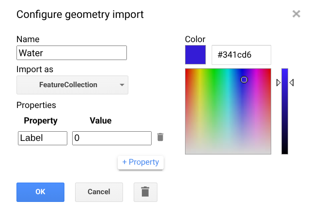

Building a machine learning (ML) classifier
We now have pre-processed the data. We need to define the classifier, the mathematical function that maps from pixel features (e.g. reflectance, indices, etc) to land cover classes. Since we’re using a supervised method, we need to provide a set of known pairs of land cover vs “features” that can be used to “learn” how to label each pixel when only the features are available. In a real world scenario, we’d need some high quality “ground truth”, either by surveying, or by using e.g,, very high resolution (VHR) remote sensing, aircraft or UAV data. Since this is not available, we’ll simplify things a bit: you’ll have to select some training samples from the images you pre-processed. We’ll also just collect samples for one year, train the classifier on that single year, and assume that the mapping is adequate for all other years.
Collecting Training Data in Google Earth Engine
We’ll build a categorical training dataset for supervised land cover classification, emphasising manual point collection within the Earth Engine Code Editor. Training data are essential for supervised classifiers because they provide labelled examples that the algorithm uses to “learn” how spectral information corresponds to real land cover types. In this context, classes such as soil, water, vegetation, and built-up (urban) are represented with integer labels (so water could be assigned label 0, built-up 1 and so on).
Setting up training layers
First, you need to create new Feature Collections in the Earth Engine map interface to hold the labelled points. For each land cover class of interest, you:
- Click the drawing tools button in the upper left of the map window to enable point drawing.

- Use the point marker tool to place points on the map that clearly represent a particular class based on your background data (e.g. built-up areas, vegetation, water, bare soil).
- In the Geometry Imports panel, click the gear icon next to the newly created “geometry” layer to rename it to something class-specific (e.g. built_up, vegetation), set “Import as” to FeatureCollection, and add a numeric property called
labelwith a unique integer for that class.

- We have now defined where the some of the training samples will be stored. Go back to the point maker tool, and click on “+ Add layer”, and repeat the above procedure for another landcover classes so that each class has its own labelled point layer.
You’ll notice that the different layers have been added to the top of the code editor window, under Imports. That means that you can access them within GEE.
Images from your prepared 2020 annual Landsat composite should be added as basemaps while doing this. You can also load high-resolution reference imagery (e.g., from the high-res GEE mosaic or your own assets) and toggle between these basemaps so you choose points where the class is confidently known and visible for that season. Make sure your reference imagery time overlaps with your 2020 composite to avoid labelling changes that occurred at different dates.
Collecting training points with the mouse
When you have the proper basemaps visible, you collect the training data by manually clicking on the map:
- Select the point layer you have set up for a class in the Geometry Imports panel.
- Choose the point marker tool.
- Click in the map window to place a point where you are confident the class is present (e.g., a clear urban rooftop for built-up, water body for water).
- Toggle between your high-resolution basemap and your 2020 composite to make sure the labelled land cover matches both reference and classification imagery.
- If you misplace a point, it can be moved or deleted with the pan hand tool.
- Be sure to collect points throughout the entire AOI and include examples from the edges of class boundaries: want to the classifier to learn the variability within each class.
- There is no fixed number of points needed; this is often iterative: you collect, classify, inspect errors, and add more as needed.
Once all classes have suitable points collected, visualising them helps check that they are well distributed and sufficiently representative. Ideally, you want an even spread so that each class’s points cover the spatial and spectral variability within the AOI. After this, you merge the separate FeatureCollections into one combined collection and export it (for example to Google Drive or as an Earth Engine Asset) for use in classification workflows such as Random Forest.
Merging the training set and exporting
To merge all the classes into a single object, you can write the following code:
var Bamako_training = Forest.merge(Water)
.merge(Vegetation)
.merge(BuildUp) ;You can then save them to a GEE asset and/or a Google Drive export:
Export.table.toAsset({
collection: Bamako_training,
description: 'BamakoTraining2020',
assetId: 'BamakoTraining2020'
}); // Exports to a GEE asset that you can re-import on other scripts!
Export.table.toDrive({
collection: Bamako_training,
description: 'BamakoTraining2020',
}); // As a safety precaution, it's a good idea to also export to a GeoJSON
// file that you can e.g. open & modify in QGIS etc.Training, validating and applying the classifier
Now, let’s use a new script to train, validate and apply the classifier. We’ll need to import your training set and the 2018 annual mosaic into your workspace.
// The following code is my training set and mosaic. You should have
//something similar. Or you can go ahead and use mine! ;-)
//var trainingFC = ee.FeatureCollection("users/xgomezdans/BamakoTraining2018"),
// image = ee.Image("users/xgomezdans/Bamako_Mosaic_2018");
// Let's select all the bands to go into the classifier.
// You can test using a smaller subset and see how th classifier changes.
var bands = ["blue", "green", "red", "nir",
"swir1", "swir2",
"NDVI", "MNDWI", "NDBI", "UI", "IBI", "BRIGHT"] ;
image = image.select(bands);
// We now extract the reflectance, indices for each of the training set sample points
var samples = image.sampleRegions({
collection: trainingFC,
properties: ['class'],
scale: 30,
tileScale: 4
});
// Add random number for splitting
var samplesRandom = samples.randomColumn('random');
// 70% training
var trainSet = samplesRandom.filter(ee.Filter.lt('random', 0.7));
// 30% testing
var testSet = samplesRandom.filter(ee.Filter.gte('random', 0.7));
// This is the RF algorithm. Takes our trainSet, our bands, and fits it.
// You may want to change the parameters below, it's a bit of a dark art!
var rf = ee.Classifier.smileRandomForest({
numberOfTrees: 300,
variablesPerSplit: null,
minLeafPopulation: 1,
bagFraction: 0.7,
seed: 42
}).train({
features: trainSet,
classProperty: 'class',
inputProperties: bands
});
// Test on the validation set....
var validated = testSet.classify(rf);
var confusionMatrix = validated.errorMatrix('class', 'classification');
print('Confusion Matrix', confusionMatrix);
print('Overall Accuracy', confusionMatrix.accuracy());
print('Kappa', confusionMatrix.kappa());
print('Producers Accuracy', confusionMatrix.producersAccuracy());
print('Users Accuracy', confusionMatrix.consumersAccuracy());
// Now classifiy the 2018 composite using the RF classifier....
var classified = image.classify(rf);
var palette = [
'#4575b4', // water
'#1a9850', // veg
'#d73027', // bare
'#fee08b', // builtup
];
Map.centerObject(trainingFC, 12);
Map.addLayer(classified,
{min: 0, max: 3, palette: palette},
'Landcover Classification');
// We can also export the classifier to use elsewhere
Export.classifier.toAsset({
classifier: rf,
description: 'classifier_export',
assetId: "BamakoRFClassifier"
});
// You can load it up again using e.g.
// var rf = ee.Classifier.load(assetId)
In my data set, the overall accuracy was around 82%, with a \(\kappa\) value around 0.74, which suggests that on the same year, and around Bamako, the classifier is pretty good. The confusion matrix in Table 1 gives as an interesting vista of the classifier’s performance:
| Reference Predicted | Water (0) | Vegetation (1) | Bare (2) | Built-up (3) | Row total |
|---|---|---|---|---|---|
| Water (0) | 47 | 0 | 1 | 0 | 48 |
| Vegetation (1) | 0 | 32 | 2 | 6 | 40 |
| Bare (2) | 1 | 13 | 23 | 13 | 50 |
| Built-up (3) | 0 | 3 | 7 | 114 | 124 |
| Column total | 48 | 48 | 33 | 133 | 262 |
We can make the following observations:
Water: This is the most accurately classified category, with 47 out of 48 instances correctly identified.- `Built up: This class shows strong performance with 114 correct predictions (92%), though it occasionally absorbs misclassifications from Bare Soil and Veg.
- The biggest error occurs in the Bare Soil class, where only 23 out of 50 instances were correctly identified. A large portion of Bare Soil (13 instances) was misclassified as Vegetation, and another 13 were misclassified as Built up. This suggests a spectral similarity between these land cover types that the model is finding difficult to resolve.
What do you think causes this confusions?
Interpreting the classifier
ML methods are often defined as “black box” methos, in the sense that decisions they make are not obvious. We can try to shed some light on this by calculating some metrics and plotting scatterplots. For example, Figure 1 shows the normlised Feature Importance for all the used Features. While MNDWI (the “water” index) is a bit higher than all the others, it looks as if the RF is using all the available information without being biased by any single features. Figure 2 shows the scatterplot between the NDVI and NDBI, but it’s not very informative: clearly, water is in the bottom right hand side, but we can see that all the other classes appear clustered in the top left, with quite a bit of overlap.
Why do you think this is happening?
Can you think of some other strategy to improve separation?